Wow, it has been 10 years since these photos were taken!
A lot has happened in the last 10 years...
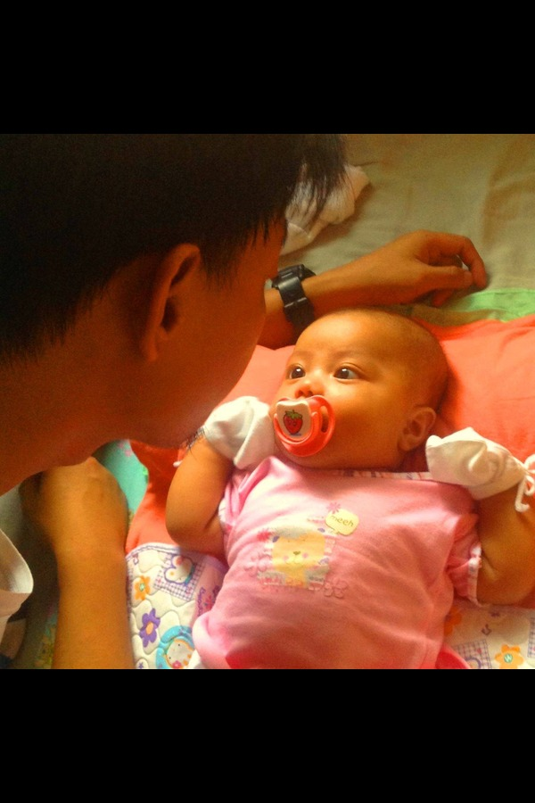
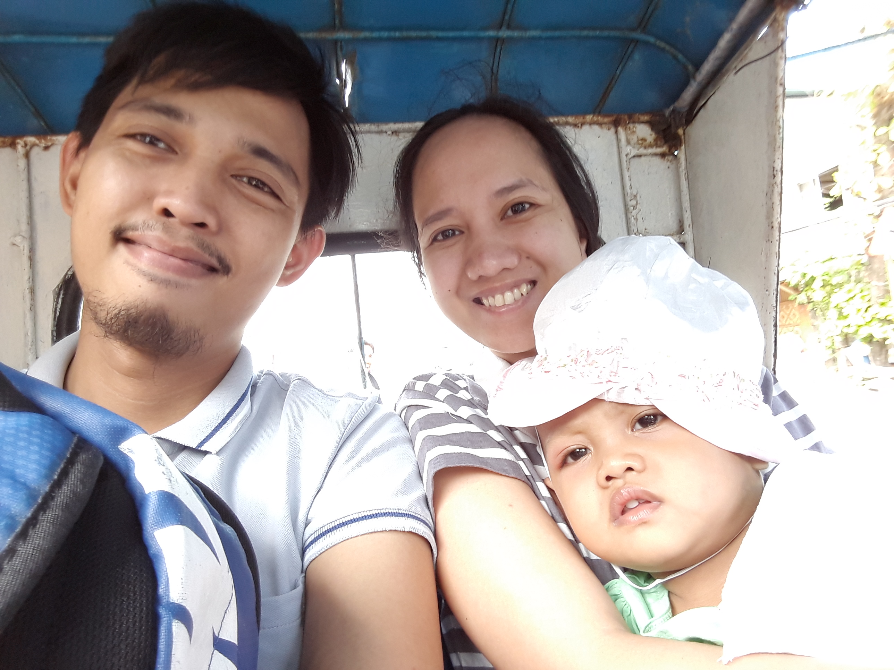
In 2015, Althea Adriane was born!
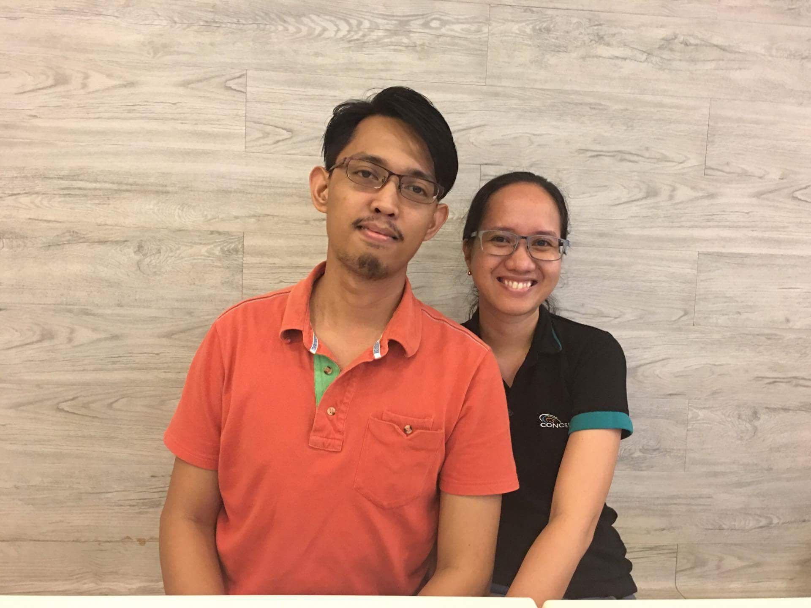
2016 — just the two of us in Metro Manila!
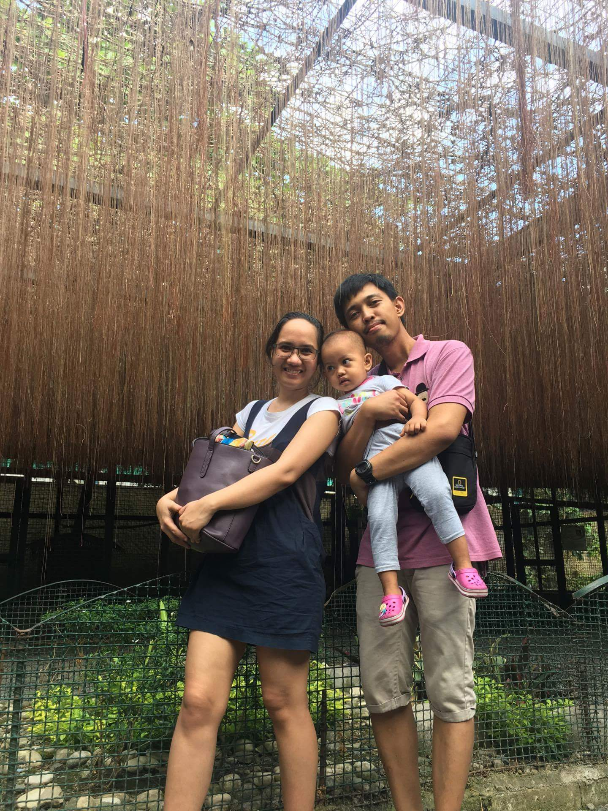
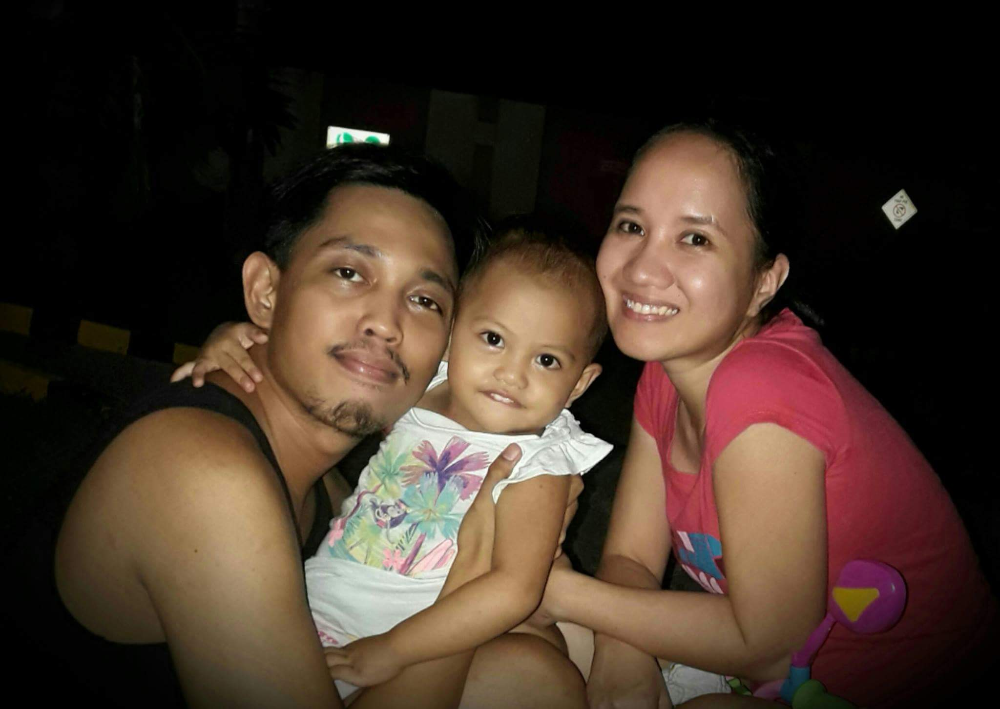
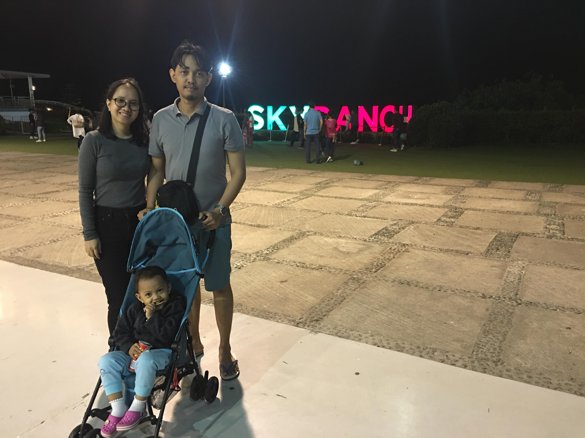
2017-2018 — Althea joined us in Manila, and I had to go back to Libya...
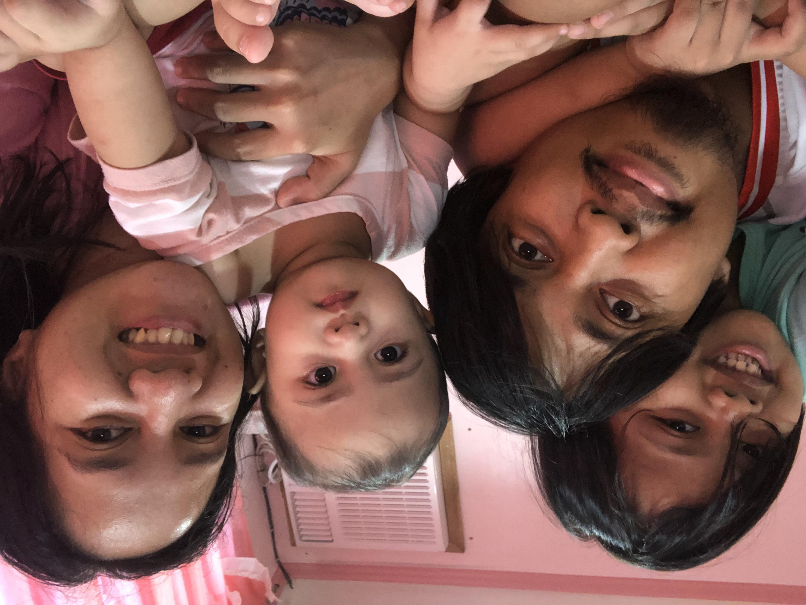
In 2019–2020, our lives became more challenging due to the COVID-19 pandemic. Yet, amidst those trying times, a blessing came — Athena was born, and at last, our family was complete.
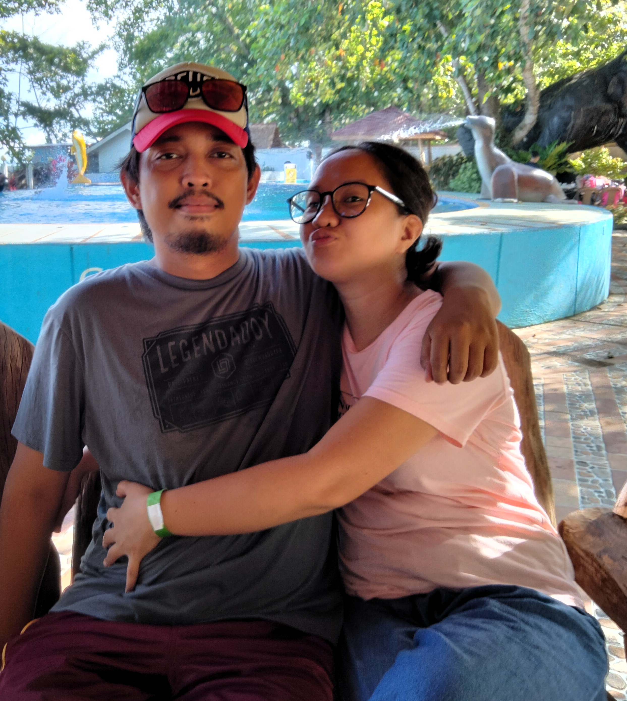
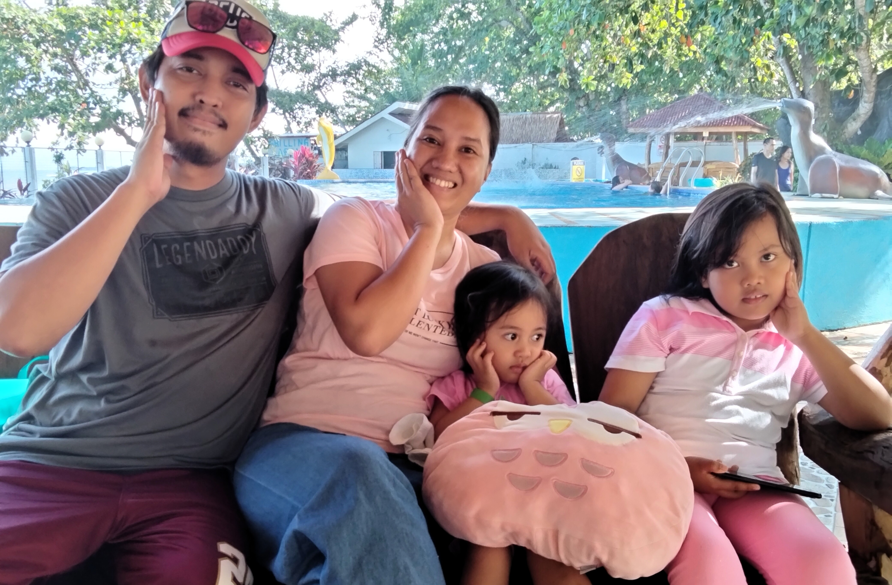
Ten years passed in the blink of an eye. In that time, we’ve raised our two beautiful daughters, celebrated birthdays and milestones, shared simple joys over home-cooked meals(which mostly i prepared), and endured the sleepless nights of sickness and worry (mostly you hehe). We’ve weathered storms both the typhoons outside our home and the challenges within, worked hard to build our careers, managed tight budgets, climbed out of debts, and still found moments to laugh together. Through long rides, family trips, holiday gatherings, and quiet evenings when the girls were finally asleep, one thing has remained constant: I’m deeply grateful that, through every joy and struggle, I’ve had you by my side.

 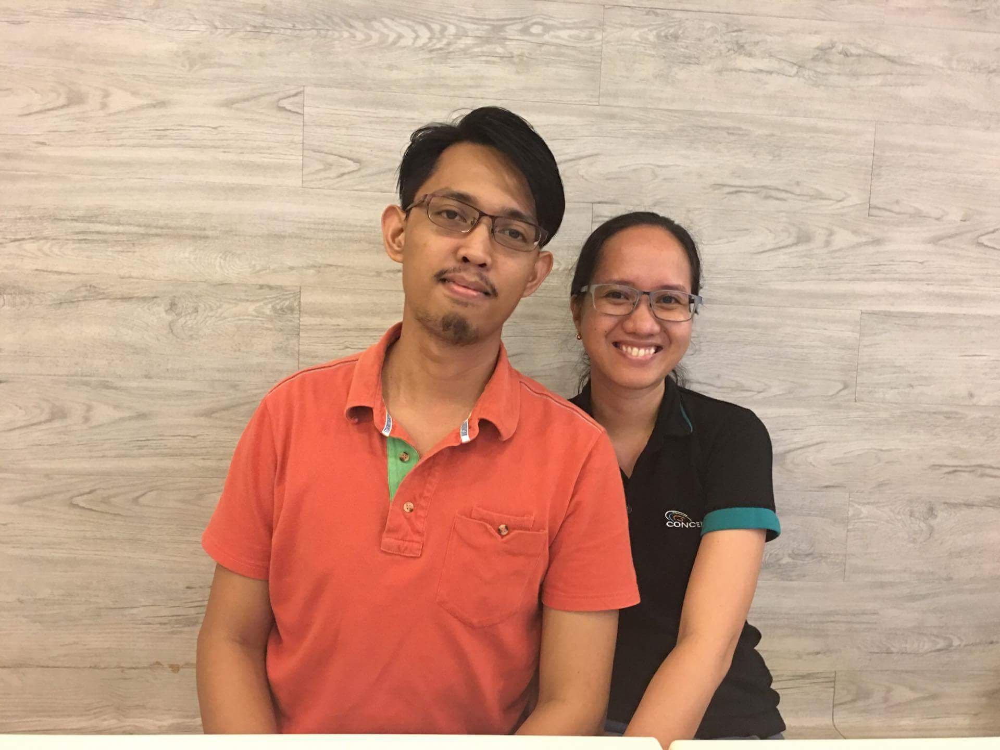
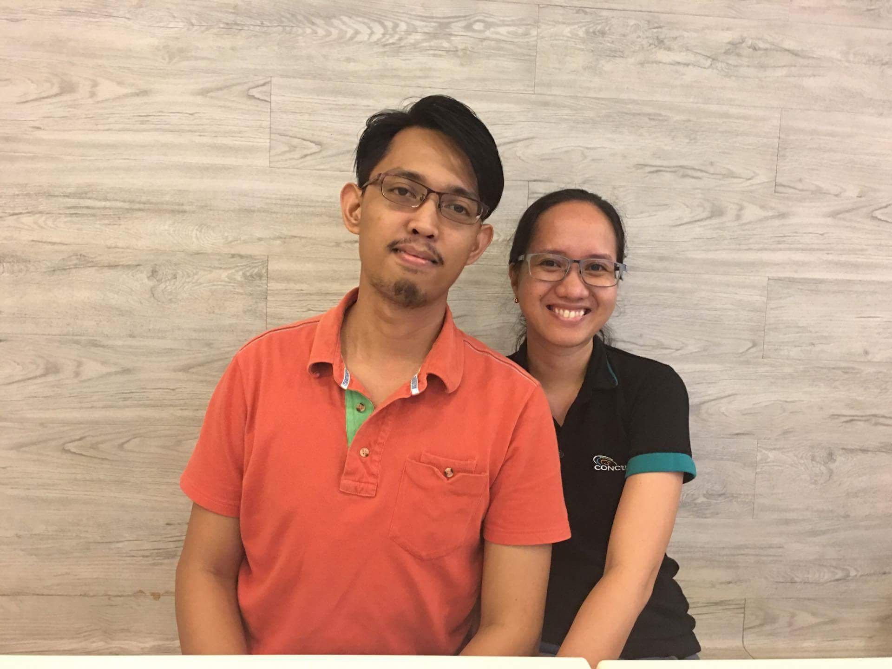